Conquest · Arthroscopic Manual Instruments
Stryker의 프리미엄 관절경 수기구(Conquest) 40종 — EDM(방전가공) 정밀 가공, 경화강 + 크롬 코팅, 피로를 줄인 핸들
Low-profile tip
좁은 공간에서도 정밀하게 위치를 잡는 낮은 프로파일 팁.
Meniscal Crescent
특허 받은 Meniscal Crescent 설계로 반월상 연골을 윤곽을 따라 절제.
90° Rotary Punch
반월상 연골의 전방~내측 1/3 접근을 위한 90° Rotary Punch.
Punches · 펀치
톱니가 조직을 턱 안으로 부드럽게 끌어들이도록 설계 — 2.7mm / 3.4mm
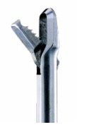
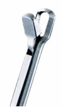
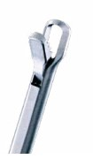
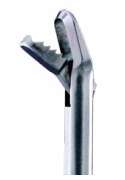
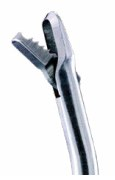
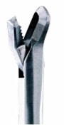
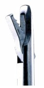
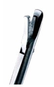
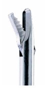
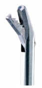
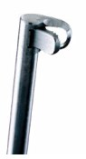
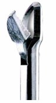
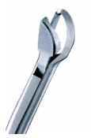
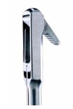
출처: Stryker Conquest Arthroscopic Manual Instruments 브로셔(1000900260 Rev E). 30° Meniscal Crescent의 좌·우 품번은 브로셔 내 표기가 달라 구분하지 않았습니다. 주문 전 최신 카탈로그를 확인하세요.
Graspers · 그라스퍼
어깨·무릎 어디든 접근해 조직과 유리체(Loose body)를 확실하게 잡도록 설계
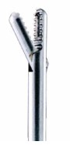
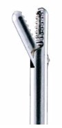
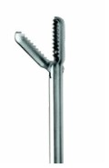
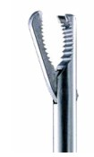
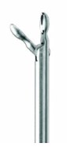
Scissors · 가위
부드러운 Nose로 주변 조직 손상을 줄이며 진입
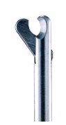
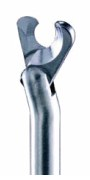
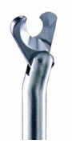
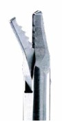
Small Joint · 2.0mm
팔꿈치·손목·발목 관절경을 위한 2.0mm 기구
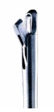
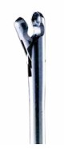
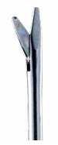
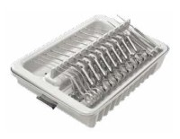
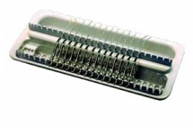
Champion Small-Joint Instrumentation Kit 242-100-000
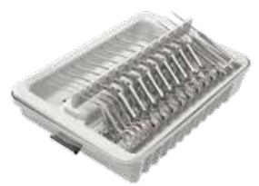
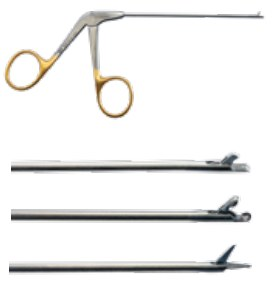
| 구성 | 사양 | Part No. |
|---|---|---|
| Blunt Nose | 2.1mm · Straight / Right / Left / Down / Up | 242-100-002 / -003 / -004 / -005 / -006 |
| Blunt Nose | 2.7mm · Straight / Up | 242-100-012 / -013 |
| Scissors · Grasper | 2.5mm | 242-100-007 / -008 |
| Small-Joint Probe | Straight / 90° / 30° | 242-100-014 / -015 / -016 |
| Tray | 12 Instrument Sterilization Tray | 242-000-012 |
| 추가 기구 | Mini 2.0mm Punch / Grasper / Scissors | 242-010-200 / -300 / -400 |
Probes · 프로브
관절 내 구조물의 위치와 크기를 가늠하는 Calibrated Probe
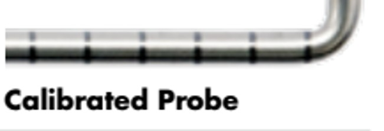
Hip 전용 Probe는 Hip 수기구 키트, Small-Joint Probe는 위 소관절 키트를 참고하세요.
Cannulas · 캐뉼라와 접근 기구
Dri-Lok 1회용 캐뉼라 — 일반 75mm와 Hip용 Long 90mm
| Dri-Lok · Standard 75mm (5/box) | 5.0mm | 6.5mm | 8.0mm |
|---|---|---|---|
| Threaded | 3910-075-500 | 3910-075-650 | 3910-075-800 |
| Non-Threaded | 3910-075-501 | 3910-075-651 | 3910-075-801 |
| Distal Threaded | 3910-075-502 | 3910-075-652 | 3910-075-802 |
| Reusable Cannulated Obturator | — | 3910-075-006 | 3910-075-008 |
| Long Hip 90mm (5/box) | 5.0mm | 6.5mm | 8.0mm |
|---|---|---|---|
| Threaded | 3910-090-500 | 3910-090-650 | 3910-090-800 |
| Distal Threaded | 3910-090-502 | 3910-090-652 | 3910-090-802 |
| Reusable Cannulated Obturator | — | 3910-090-006 | 3910-090-008 |
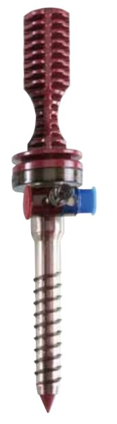
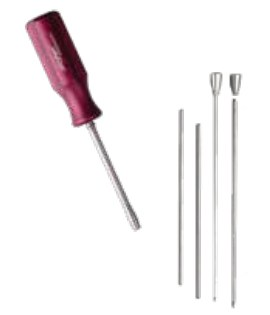
| Dri-Lok 액세서리 | 용도 | Part No. |
|---|---|---|
| Wissinger Rod 4.0mm (Small) | 6.5mm Dri-Lok · Reusable Cannulated Obturator와 사용 | 266-719-000 |
| Wissinger Rod 5.0mm (Large) | 8.0mm Dri-Lok와 사용 | 266-720-000 |
| Wissinger Rod Handles (2/box) | — | 266-721-000 |
| Switching Stick 4.0mm (Small) / 5.0mm (Large) | 6.5mm Dri-Lok와 Reusable Cannulated Obturator | 266-722-000 / 266-723-000 |
ParallelPortal · 단일 포털 관절경
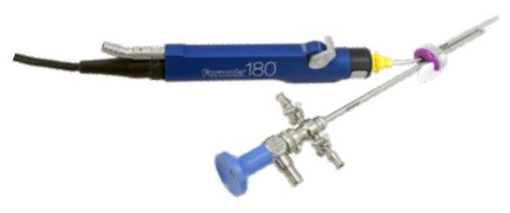
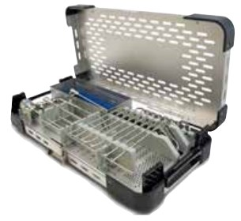
| 구성 | 사양 | Part No. |
|---|---|---|
| Ideal Eyes 30° Arthroscope | 2.9 × 200mm · Eyepiece / C-Mount (Speed-Lock) | 502-129-030 / 502-829-030 |
| Cannula | 4.6 × 200mm · Rotating / Fixed Stopcock 구성별 (일부 주문제작) | 377-829-510 ~ 377-829-695 |
| Switching Stick · Probe | 3.5mm | 377-829-700 · 377-829-701 |
| Proximal / Double Bend Cutter | 3.5 · 4.0mm — Resector · Aggressive Plus · Tomcat | 380-5x2/5x4/5x5-300 · 380-5x4/5x5-400 |
| Rental Kit | ParallelPortal Instruments Rental Kit | R233-032-201 |
출처: Stryker 2018 Endoscopy Product Guide. 현행 품목·국내 공급 여부는 담당자에게 확인하세요.
Suture Passers · 봉합사 통과기
회전근개 봉합(RCR)에서 Suture management를 단순화
Cobra
- 업계 최초의 Reusable 봉합사 통과기 — 일체형 Stainless steel 강성 바늘
- Needle skiving · misfire · needle breakage를 막도록 설계
- 두 가지 모델: Self-Capture 또는 Hook & Ratchet
Champion Suture Passer
- 1회용 Nitinol needle + 재사용 핸들
- 4가지 Jaw 옵션, 모든 Jaw에서 Ratchet On/Off 선택
- Self-capture Jaw: 봉합사를 통과시키면서 동시에 회수 / Non-capture: 보조 포털에서 수동 회수
- 16mm tissue bite · 4.6mm 낮은 프로파일 Jaw · 15mm 봉합사 loop
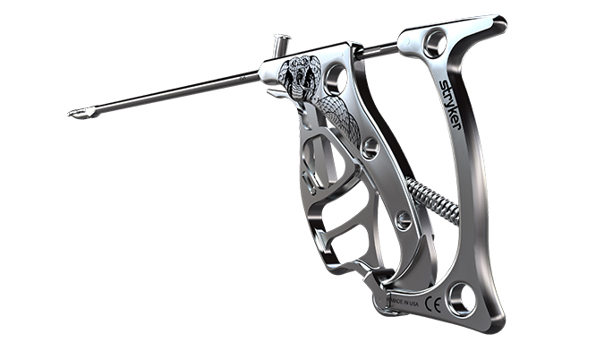
출처: stryker.com Cobra / Champion Suture Passer 제품 페이지. 국내 공급 구성은 담당자에게 확인하세요.
Hip 수기구
Hip 관절경은 4.0mm Hip 전용 수기구(Biter · Grasper · Suture Passer · Knot Pusher · Curette 등)를 씁니다.